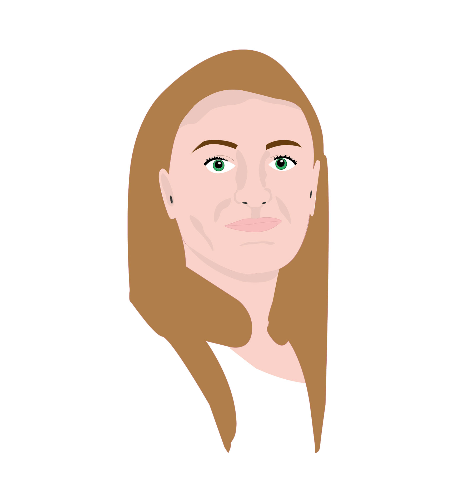
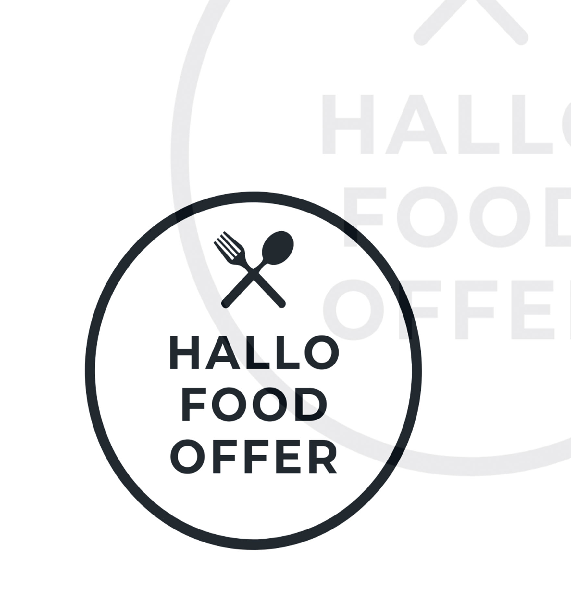
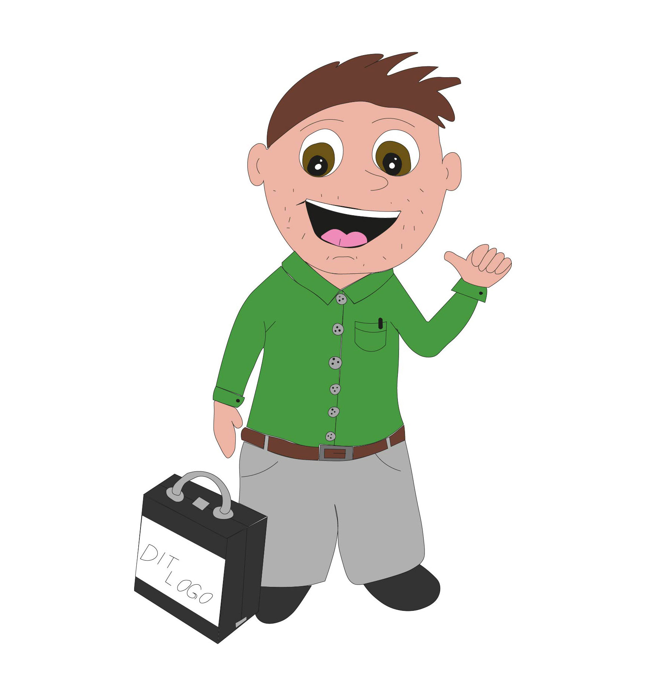
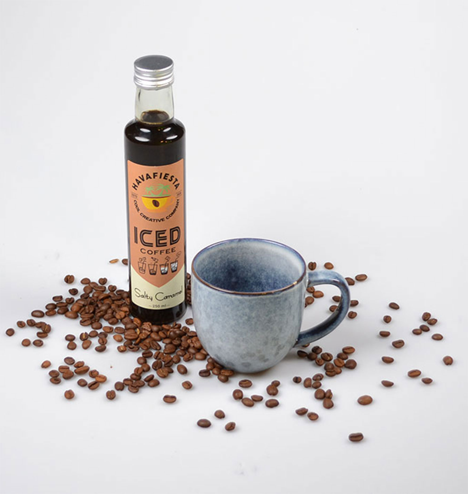
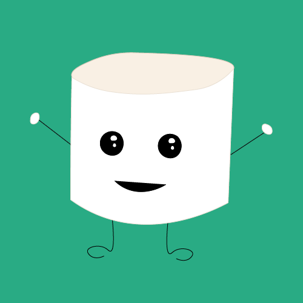
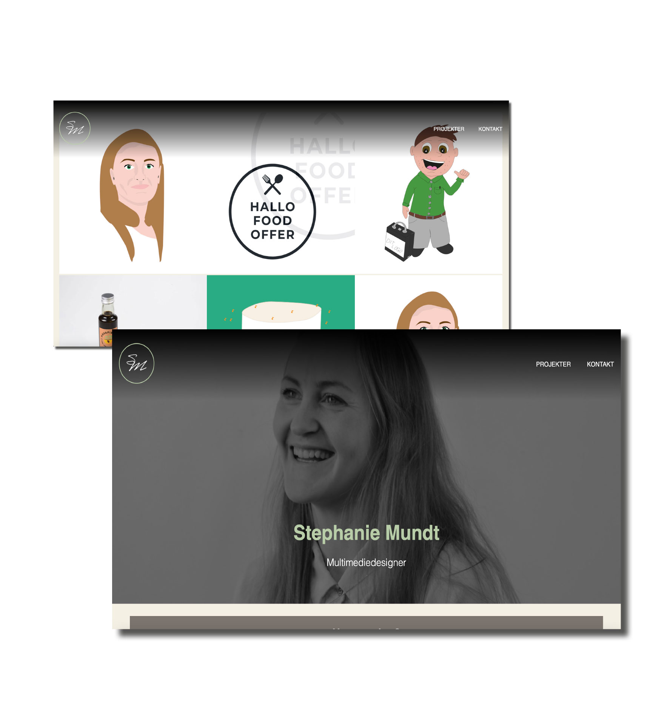

Projekter
Se nogle af mine projeker her

Illustration
Illustartioner kan bruges til mange
forskellige ting i virksomhedens markedsføring. Her kan I se at jeg blandt andet kan
lave illustrationer af ansigter. Men jeg kan også lave blandt andet ikoner.
Applikation
Apps bliver brugt rundt om i mange
virksomheder, til mange forskellige formål. Her kan jeg hjælpe med at designe app'en I
skulle have i tankerne.


Persona
Som en sjov lille gimic kan jeg lave
illustrede personaer til jeres hjemmeside og andre platforme. Disse kan laves som en fra virksomheden,
jeres typiske kunde eller en helt ny sjov figur.
Produktfoto
Hvis I har brug for at få
taget billeder af jeres produkter, er dette også noget jeg kan gøre. Her kan jeg være med til at
produkterne fremstår bedst muligt.


Animation
Animationer kan være en sjov lille ekstra ting
til Jeres hjemmeside eller til de sociale medier. De kan bruges til at få et budskab frem, men
også til at lave lidt sjov.
Hjemmeside design
Har I brug for en ny hjemmeside eller
hjælp til et nyt design af den gamle, er dette også noget jeg kan hjælpe med. Her kan jeg også hjælpe media
at vedligeholde og opdatere hjemmesiden.
